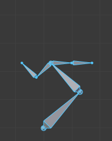
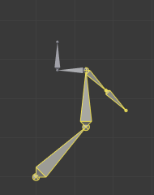

编辑¶
在 姿态模式 里，骨骼行为和物体一样。所以变换操作 (平移、旋转、缩放等) 跟在 物体 模式下很像。 (所有可用的骨骼重新分组 在 子菜单)。但是，有一些重要的特点：
骨骼的关系至关重要(参见 Parenting 父子)。
给定的骨骼(即它的默认轴心点，当它是唯一选择的骨骼时)的"变换中心"是 其首端 。注意一些轴心点选项似乎不能正常工作，实际上，除了 3D游标 之外，其它的似乎总是使用选择的中点(当 激活物体 被选中时，而不是例如激活骨骼的首端等)。
Basic Posing 基本姿势¶
如前面所述，骨骼的变换是根据骨架的 重置位置 执行的，也就是 编辑模式 中定义的状态。这意味着在 姿态模式 中，每个骨骼的缩放比例为1.0，零旋转和零位移(你可以在3D视图中按 N 在 变换 面板中看到)。

此外，这些动作的局部空间是骨骼自己的空间(当您启用 骨架 面板的 轴向 选项时可见)。这在使用轴锁定时尤为重要，例如 姿态模式 中没有特定的“骨扭转”工具，因为你可以通过按 R Y Y 键锁定在局部Y轴上的方式围绕骨骼的主轴旋转... 这也适用于选定的几个骨骼; 每个骨骼都锁定到自己的局部轴！
当你给骨架摆姿势时，假定你用一个或多个物体蒙皮给它！显然，当你在 姿态模式 中转换骨骼时，其相关物体或物体的形状相应地跟着实时移动/变形。不幸的是，如果你有一个复杂的绑定设置和/或一个复杂的蒙皮物体，这可能会产生滞后，并让交互式编辑非常痛苦。如果遇到这种麻烦，请尝试启用 骨架 面板的 Delay Deform(延迟变形) 按钮，一旦应用了变换操作，蒙皮物体才会被更新。
自动IK¶
参考
- 模式
姿态模式
- 面板
侧栏中的自动IK选项在骨骼摆姿势时可以启用临时IK约束。链的行为从所选骨骼的尾端到最上面的父级骨的首端。请注意，此模式缺少选项，只能通过将结果转换应用于链中的骨骼来实现。
X 轴镜像¶
参考
- 模式
编辑和姿势模式
- 面板
此选项可以沿X轴自动镜像编辑动作。 另一个非常有用的工具是通过 X 轴镜像 编辑选项，而在 编辑模式 中选择了骨架。 如果你有一对同名的骨头只有一个不同的“边后缀”(例如“.R”/“.L”或“_right”/“_ left”...)，一旦启用此选项， 每次你转换(移动/旋转/缩放......)骨骼，它的“另一边”对应物将相应地通过沿着骨架局部的X轴进行对称性变换。 由于大多数操纵对象至少有一个对称轴(动物，人类......)，这是一种简单的方法，可以让您免于一半的编辑工作！
- 相对镜像
使用 * X轴镜像 * 时的任何相对转换的帐户。
See also
Clear Transform 清除变换¶
参考
- 模式
姿态模式
- 菜单
- 快捷键
Alt-G, Alt-R, Alt-S
一旦你改变了一些骨骼，如果你想回到他们的重置位置，只要清除他们的变换。
- 位置，旋转，缩放 Alt-G, Alt-R, Alt-S
清除单个变换。
- All
立即清除所有内容。
- Reset Unkeyed 重置非关键帧
将变换清除转换到其关键帧状态。
- Only Selected 仅选定
仅在所选骨骼或所有骨骼上操作。
请注意，在 封套(Envelope) 视图显示中， Alt-S 不是清除缩放，而是缩放所选骨骼的 距离 影响区域(也可以通过： 菜单项，这仅在 封套(Envelope) 可视化中有效，即使它始终可用...)。
Apply 应用¶
参考
- 模式
姿态模式
- 菜单
- 快捷键
Ctrl-A
- 将当前姿态应用为静置姿态
相反，你可以将当前姿势定义为新的静置位置(即将当前变换应用于 编辑模式 )，当你这样做时，蒙皮的物体/几何体 也 重置到其默认未变形的状态，这通常意味着你将不得不重新蒙皮。
- 将选中姿态应用为静置姿态
和 将当前姿态应用为静置姿态 相同，但仅用于选中的骨骼。
- 将可视变换应用为新的姿态
TODO。
- 将自定义属性值指定为默认值
TODO。
间帧调整¶
间帧调整工具。¶
在动画中有几种编辑姿势的工具。
姿势模式 还有一堆骨架专用的编辑选项/工具，如 骨骼自动命名 ， 属性切换/启用/禁用 等等。我们已经在骨架编辑页面中描述过。看上面的链接...
松弛姿态到补间姿态¶
参考
- 模式
姿态模式
- 工具
- 菜单
- 快捷键
Alt-E
松弛姿态与上述主题有些相关，但它只适用于关键帧。当你编辑这样一个骨骼(并因此将其从“关键位置”移开)时，使用此工具将逐渐“回到”其“关键位置”，随着越来越近的时候步调会越来越小。
Breakdowner 补间器¶
参考
- 模式
姿态模式
- 工具
- 菜单
- 快捷键
LMB -拖动
在当前帧创建一个合适的补间姿态。
通过在工具处于活动状态时按下以下键，“补间(Breakdowner)”工具可以约束在特定变换和轴上工作：
G, R, S: 移动、旋转、缩放
B: 软骨骼
C: 自定义属性
X, Y, Z: 对应轴向
复制/粘贴姿态¶
参考
- 模式
姿态模式
- 菜单
, ,
- 快捷键
Ctrl-C Ctrl-V Shift-Ctrl-V
Blender 允许你通过 姿态 菜单复制和粘贴姿势，或直接使用3D视图标题右侧部分的三个“复制/粘贴”按钮：
- 复制姿态
将所选骨骼的当前姿势复制到姿势缓存。
- Paste Pose 粘贴姿势
将缓存的姿势粘贴到当前姿势的骨骼上。
- 粘贴已翻转姿态
将缓存姿势翻转粘贴到当前姿势的骨骼上。
以下是重点：
该工具在Blender会话阶段工作，这意味着你可以在电影，场景甚至文件中使用它。但是，姿势缓存不保存，所以当你关闭Blender时，你将丢失它。
只有一个姿势缓存。
在复制期间只考虑所选择的骨骼(即仅复制选定的骨骼姿势)。
另一方面，在粘贴过程中，骨骼的选择并不重要。复制的姿势是以每个名字为基础应用的(例如，如果你在复制姿势时选择了“前臂”骨骼，则当粘贴它时，当前姿势的骨骼会获得其姿势 - 如果没有这样的命名的骨骼，什么都不会发生...)。
实际上，复制和粘贴的是每个骨骼在其自身空间中的位置/旋转/缩放。这意味着所产生的粘贴姿势可能与原始复制的姿势有很大不同，具体取决于：
我们原来骨架的重置位置。
以及他们父级目前的姿势。

我们原来骨架的重置位置。¶ |

我们目标骨架的重置位置。¶ |

第一个复制的姿势(注意，只选择了两个骨骼，因此复制它们)。¶ |

...粘贴在目标骨架上...¶ |

...镜像粘贴在目标骨架上。¶ |

上面同样的姿势被复制，但是这次所有骨骼都被选中了，…¶ |

...粘贴在目标骨架上...¶ |

...镜像粘贴在目标骨架上。¶ |
传导¶
参考
- 模式
姿态模式
- 菜单
- 快捷键
Alt-P
传导工具将当前帧上所选骨骼的姿态复制到由 终止模式 分隔的关键帧。它自动化复制和粘贴的过程。
选项¶
- 终止模式
确定如何决定何时停止覆盖关键帧的模式。
- While Held 当保持时
最复杂的模式，因为它试图通过检查每个控件的动画曲线中的暂停来猜测何时停止传播(即骨骼的所有F曲线，而不是每个F曲线)。
- To Next Keyframe 到下一关键帧
简单地将姿势复制到当前帧之后的第一个关键帧(但不包括任何关键帧)。
- To Last Keyframe 到上一关键帧
将简单地替换最后一个关键帧。 (即循环动作)。
- Before Frame 指定帧之前
到当前帧和 结束帧 选项之间的所有关键帧。此选项最适合脚本使用，因为设置此帧值时有困难，尽管如果需要，可以通过操作 调整上一步操作 面板手动设置此选项。
- Before Last Keyframe 上一关键帧之前
从当前帧到所有关键帧，直到找不到更多关键帧。
- On Selected Keyframes 在选定的关键帧
将所选骨骼的姿势应用于所有选定的关键帧。
- On Selected Markers 在所选标记
发生在当前帧之后具有场景标记的帧上的所有关键帧。
- End Frame 结束帧
定义关键帧将受影响的帧范围的上限(下限为当前帧)。
Show/Hide 显示/隐藏¶
参考
- 模式
所有模式
- 面板
- 菜单
你不必使用骨骼层来显示/隐藏一些骨骼。和物体，顶点或控制点一样，您可以使用快捷键 H:
H 将隐藏选定的骨骼。
Shift-H 将隐藏所有骨骼 但除了所选的那个 。
Alt-H 将显示所有隐藏的骨骼。
您也可以使用显示面板( ) 的 隐藏 复选框。
请注意，骨骼的隐藏取决于某种模式的，即你可以在 编辑模式 中隐藏某些骨骼，但它们仍将在 姿态模式 中可见，反之亦然。 姿势模式 中的隐藏骨骼在 物体模式 中也是不可见的。在 编辑模式 中，要隐藏的骨骼必须被完全选择，而不仅仅是他的首端或尾端。